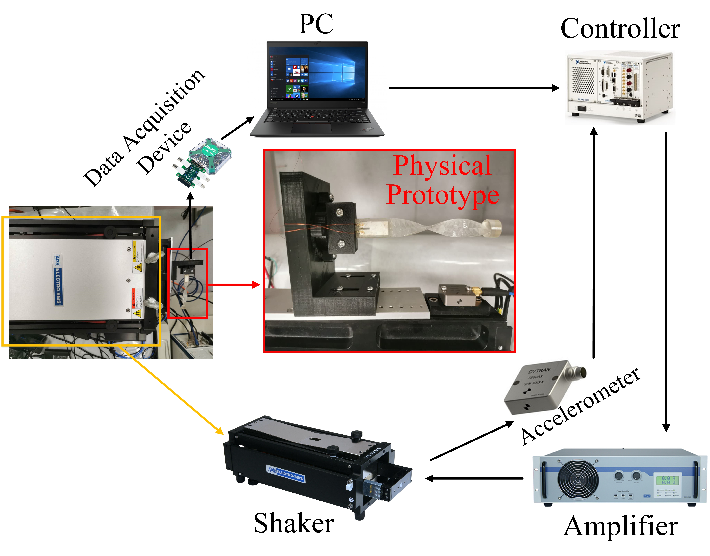
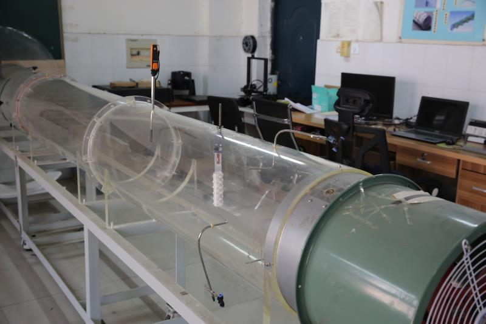
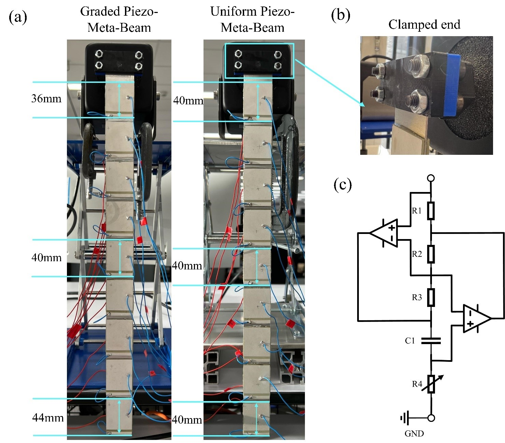
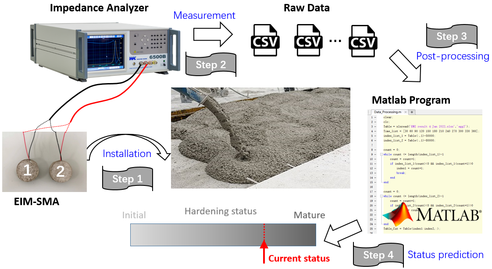

|
Guobiao Hu: Projects
Project 1: Vibration Energy Harvesting
-
Energy harvesting technology has been widely deemed as a promising way to enable low-power consumption Internet of Things (IoT) devices to be self-sustained. However, environmental vibration energy often spreads over a broadband spectrum.
To have a robust performance over a wide frequency range, vibration energy harvesters need to be designed to be insensitive to excitation frequencies. We exploit various methods, including introducing nonlinearities into the systems,
developing self-adaptive structures, designing multi-modal configurations, etc., to achieve this purpose.

Project 2: Small-scale Wind Energy Harvesting
-
In the context of the rapid development of Internet of Things (IoTs) [including Industrial Internet of Things (IIoTs)], providing power supply for billions of network devices to guarantee their perpetual operation in heterogeneous
environments has been recognized as one of the biggest challenges. Wind induced by atmospheric motion is one of the most ubiquitous natural energy sources on Earth, and water covers 71% of the Earth's surface. Both wind and water
circulation have inspired the exploration of flow-induced vibrations (FIVs) phenomena, which facilitate the hydrokinetic energy conversion based on the readily available knowledge of vibration energy harvesting.

Project 3: Acoustic-Elastic Metamaterials
-
Metamaterials and phononic crystals (PCs) with artificially designed periodic microstructures have attracted increasing research interests due to their unique properties that cannot be easily realized in natural materials. Although
elastic metamaterials have the advantage of achieving low frequency band gaps, the widths of band gaps of elastic metamaterials are usually relatively narrow. This significantly limits the application of elastic metamaterials in
the circumstances where vibrations exist over a broadband spectrum. We work on broadening the band gaps of metamaterials through different ways, including introducing internal coupling mechanisms, making band gaps tunable, proposing
various grading strategies, etc.

Project 4: Structural Health Monitoring
-
Concrete is the most widely used material in construction industry over the world. Therefore, concrete structural safety reinforcement, assessment, and evaluation have attracted lots of research attention. Hydration is a complicated
physical transition and chemical reaction process that strongly affects the microstructure formation in concrete materials, thus its structural strength. We explore electromechanical impedance measurement (EIM) based solutions
for monitoring the hydration process of fresh concrete in the early times and the structural health of concrete infrastructure in service.

|